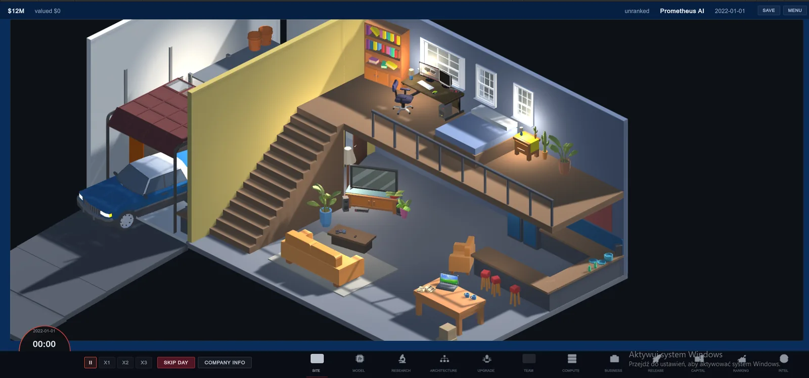
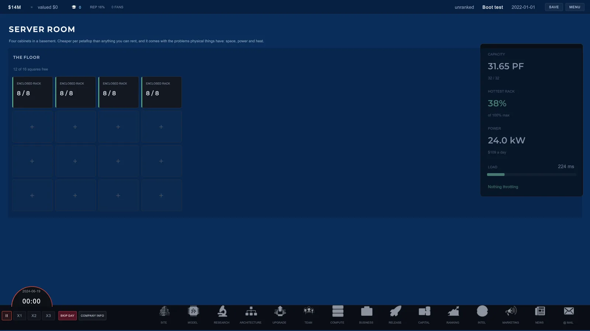

Scaling Laws było grywalne w drugim tygodniu sierpnia. Opublikowałem je 30 sierpnia, o wpół do czwartej w niedzielne popołudnie, po tym jak od poprzedniego poniedziałku powtarzałem ludziom, że wychodzi „dzisiaj". To jest zapis tego, co działo się pomiędzy, spisany, kiedy jeszcze jest niewygodny do spisania.
Co dało dwadzieścia dziewięć dni
Pierwszy commit wylądował 2 sierpnia 2026. Pierwszy publiczny build wyszedł 30 sierpnia. Pomiędzy były zmiany w taksówce, po dziesięć do dwunastu godzin dziennie, i wieczory po nich.
Scaling Laws to tycoon o firmie AI. Zaczynasz 1 stycznia 2022 z dwunastoma milionami dolarów, bez produktu i bez zespołu, i prowadzisz laboratorium przez cztery lata, które po tym nastąpiły. Dwadzieścia dwie prawdziwe generacje sprzętu niosą swoje prawdziwe daty premier i ceny startowe. Akcelerator kupiony w dniu premiery jest wart mniej więcej połowę tego, co za niego zapłaciłeś, tego samego dnia, i traci kolejną ćwiartkę przy każdej lepszej premierze.
Ten jeden fakt jest całą grą. Nie kupujesz ulepszeń. Wyczuwasz ich moment.

Tempo wzięło się z jednej decyzji podjętej pierwszego dnia: reguły leżą w warstwie, która nie importuje niczego z silnika. Żadnych typów Unity, żadnej sceny, żadnego MonoBehaviour. To znaczy, że całą ekonomię da się przetestować w niecałą minutę bez otwierania edytora, i jest to jedyny powód, dla którego gra o tej gęstości mogła powstać w miesiąc wieczorów.
Build był gotowy w drugim tygodniu
Nie dopieszczony. Gotowy w tym sensie, który się liczył: gracz mógł założyć firmę, zaprojektować model, wytrenować go, wydać, zobaczyć reakcję rynku, skończyć bez pieniędzy i dojść do zakończenia. Cała pętla się domykała.
Nie opublikowałem tego przez kolejne trzy tygodnie.
Oto uczciwa lista tego, co zawierały te trzy tygodnie. Czcionka o dwa piksele za mała, a potem jeszcze dwieście trzy takie same. System dotacji, który działał poprawnie i odpalał się mniej więcej raz na sto dni w grze, więc większość graczy nigdy by go nie zobaczyła. Samouczek, który przygasał, kiedy kursor był na tekście, który kazał przeczytać. Suwak wynajmu mocy, którego pełen zakres to był dokładnie miliard użytkowników na pierwszej klatce firmy, która nie miała żadnego.
Część z tego była warta zrobienia. System dotacji był naprawdę zepsuty jako projekt, a suwak był bezużyteczny. Ale w trakcie nie umiałem odróżnić jednego od drugiego i to jest ta część warta spisania. Wewnątrz pracy nie ma sygnału, który mówi, który rodzaj wieczoru właśnie masz.

Czym naprawdę był ten strach
Spodziewałem się strachu, że gra jest zepsuta. To nie było to. Miałem na to 888 testów automatycznych, w tym jeden, który rozgrywa pełną kampanię i wywala się, jeśli rozsądny gracz nie jest w stanie jej przetrwać.
To był strach, że będzie w porządku i nikt nie przyjdzie. Zepsuty build to problem, który da się naprawić. Cisza nie jest problemem, tylko odpowiedzią, i to odpowiedzią, z którą nie da się dyskutować. Dopóki build siedział na moim dysku, pytanie zostawało otwarte.
To jest głupi powód, żeby odkładać premierę o trzy tygodnie, i jest prawdziwy.
Sześć godzin przed publikacją, trzy usterki
Żadnej z nich nie mógł złapać test. Wszystkie trzy były rzeczami, które ukrywały przede mną moje własne narzędzia.
Gra otwierała się w oknie dokładnie wielkości ekranu
Nie trochę za dużym. Dokładnie. Pasek tytułu siedział nad górną krawędzią ekranu, a własny dolny pasek gry, ten z zegarem i wszystkimi zakładkami, za paskiem zadań Windowsa. Okna nie dało się przeskalować, bo wyłączyłem to osiem miesięcy temu i nigdy więcej o tym nie pomyślałem. Nie zobaczyłem tego ani razu, bo edytor Unity rysuje twoją grę we własnym oknie, z własnym paskiem tytułu. Pierwsza rzecz, którą zobaczyłby każdy gracz, była jedyną rzeczą, której strukturalnie nie mogłem zobaczyć.
Build nazywał siebie wersją 1.0
Changelog mówił 0.1.0. To nie jest księgowość: gra stempluje swoją wersję na każdym zgłoszeniu błędu, które tester wysyła przez formularz w grze. Każdy raport z dnia premiery trafiłby pod wydanie, które nie istnieje.
Zdanie w moim README nie było prawdziwe
Mówiło, że firma, która wypuści jeden model i osiądzie na laurach, bankrutuje w ciągu trzech lat, i że automatyczny test wywala build, jeśli to przestanie być prawdą. Test sprawdza, że firma nie handluje po ośmiu latach. Trzech lat nigdy nic nie mierzyło. Powtarzałem tę liczbę publicznie tygodniami, bo napisałem ją raz i brzmiała dobrze.
Ta trzecia nadal mi ciąży. Dwie pierwsze to pomyłki. Trzecia to pewne siebie publiczne twierdzenie bez pokrycia, wypowiedziane przez kogoś, którego cała oferta polega na tym, że liczby są prawdziwe. Dokumentacja to kod, którego nikt nie testuje.
Pierwsze liczby zwrotne
Build wyszedł za darmo, na Windowsa, 75,9 MB, na itch.io, IndieDB, Game Jolt i jako release na GitHubie.
| Miara | Pierwsze dni | Co mi to mówi |
|---|---|---|
| Wyświetlenia strony na itch.io | ~130 | Mało. Spodziewane. Nikt nie wie, że ta gra istnieje. |
| Konwersja wyświetleń na pobrania | ~48% | Liczba, na której naprawdę mi zależy. |
| Otrzymane zgłoszenia z formularza | 0 | Ta, na której zależało mi najbardziej, i jest pusta. |
Konwersja bliska połowie oznacza, że strona opisuje grę zgodnie z prawdą tym, którzy na nią trafiają. Gdyby popatrzyło dziesięć tysięcy osób i pobrały dwa procent, byłaby to większa liczba i gorszy wynik, bo znaczyłoby to, że strona obiecuje coś, czym gra nie jest.
Zero zgłoszeń to uczciwe rozczarowanie. Zbudowałem formularz, wstawiłem przycisk w menu pauzy, podpiąłem go tak, żeby niósł numer builda i to, jak daleko w kampanii byłeś, i napisałem na stronie sklepowej, że jedno zdanie o tym, gdzie się pogubiłeś, jest dla mnie warte więcej niż stu ludzi, którzy zainstalowali i nie otworzyli. Napisałem to arytmetycznie, nie grzecznościowo. Na razie skrzynka jest pusta i to też jest wynik.

Skąd bierze się to niepoddawanie się
To dwunasty projekt, który zacząłem, i drugi, który przeżył. Jedenaście sprzed PC Workmana umarło w zwyczajny sposób: porzucone gdzieś między ciekawym a trudnym.
Przed Radomiem był magazyn w Holandii i wózek widłowy. Ledwo domykałem miesiąc. Dwa razy wystawiono mnie z mieszkania agencyjnego praktycznie z dnia na dzień, a drugi raz był tuż przed świętami. Pisałem gdzie indziej o tym, jak zostałem zwolniony 22 grudnia po pięciu miesiącach budowania w publicznym, którego nikt nie oglądał. Nie zamierzam tego okresu ubierać w morał. Wtedy nie budował charakteru. Było po prostu źle, a jedyną rzeczą, którą miałem swoją, był katalog z kodem na laptopie chodzącym w 94 stopniach.
To, co z tego wyniosłem, jest wąskie i chyba prawdziwe: to, że praca była publiczna, sprawiło, że dało się ją przeżyć. Nie dlatego, że ktoś patrzył, bo długo nie patrzył nikt. Dlatego, że publiczna historia commitów jest jedyną rzeczą, której nie zabiera ci telefon z agencji. Jest twoja, ma znacznik czasu i rano nadal tam jest.
To jest też powód, dla którego wszystko, co robię, jest open source. To nie jest preferencja licencyjna. Zaczęło się jako jedyny sposób, żeby udowodnić samemu sobie, że ostatnie sześć miesięcy naprawdę się wydarzyło.
Co zrobiłbym inaczej
Wydałbym w drugim tygodniu. Te trzy tygodnie kupiły lepsze pierwsze wrażenie i kosztowały jedyną rzecz, która na tym etapie się liczy, czyli cudze ręce na tym. Nic, co w tym czasie poprawiłem, nie było warte trzech tygodni niewiedzy, czy ta ekonomia jest ciekawa dla kogokolwiek poza mną.
Następne jest miasto: rozplanowana bryła na 2048 metrów, domy na podzielonych działkach, biura, które najpierw się wynajmuje, a dopiero potem kupuje. Nie ma tego w tym buildzie i wolę napisać to tutaj, niż żeby ktoś tego szukał.
Scaling Laws 0.1.0 jest darmowe na Windowsa. Jeśli w to zagrasz, przydatną rzeczą nie jest to, czy ci się podobało. Jest nią dokładna minuta, w której przestałeś rozumieć, czego gra od ciebie chce.
Pytania, które ludzie zadają
Dlaczego samodzielni twórcy zwlekają z wydaniem gotowego builda?
Bo polerowanie i unikanie czuje się od środka identycznie. Jedno i drugie polega na otwarciu projektu, znalezieniu czegoś niedoskonałego, poprawieniu tego i wyprodukowaniu commitów. Różnicę widać wyłącznie z zewnątrz: polerowanie poprawia to, co gracz zauważy, unikanie poprawia to, co zobaczy tylko autor. Tutaj build był grywalny trzy tygodnie przed publikacją.
Jakie usterki najczęściej dotrwają do dnia wydania?
Te, które ukrywają przed tobą twoje narzędzia. Edytor Unity rysuje grę we własnym oknie, więc prawdziwe okno jest jedyną rzeczą, której autor nigdy nie widzi. Trzy usterki znalazły się sześć godzin przed premierą i żadnego z nich nie mógł złapać test.
Ilu pobrań spodziewać się po pierwszym buildzie?
Konwersja jest mocniejszym sygnałem niż liczba pobrań. Około 130 wyświetleń przy mniej więcej 48 procentach konwersji mówi, że strona jest wobec gry uczciwa. Dużo wyświetleń przy niskiej konwersji byłoby większą liczbą i gorszym wynikiem.
Ile trwa zbudowanie grywalnej gry w pojedynkę?
Tutaj dwadzieścia dziewięć dni, wieczorami po dziesięcio- i dwunastogodzinnych zmianach, co dało 174 publiczne commity i 909 testów automatycznych. Tempo wzięło się z trzymania reguł w warstwie, która nie importuje niczego z silnika, więc cała symulacja testuje się w niecałą minutę.